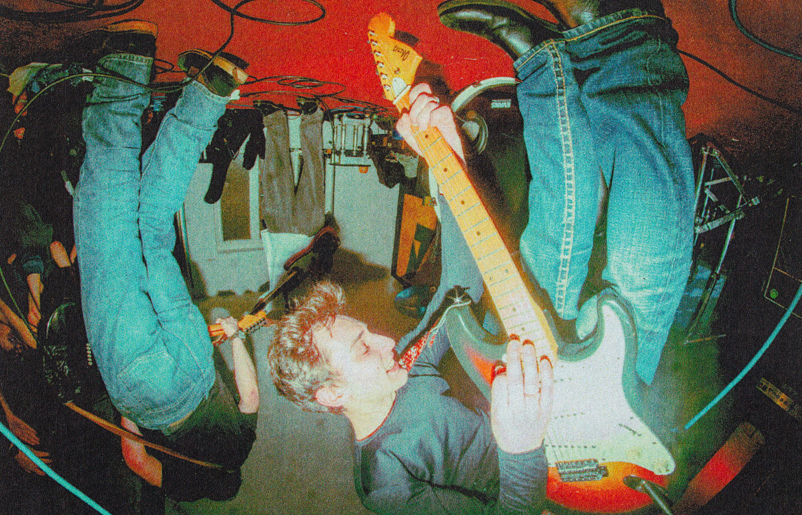
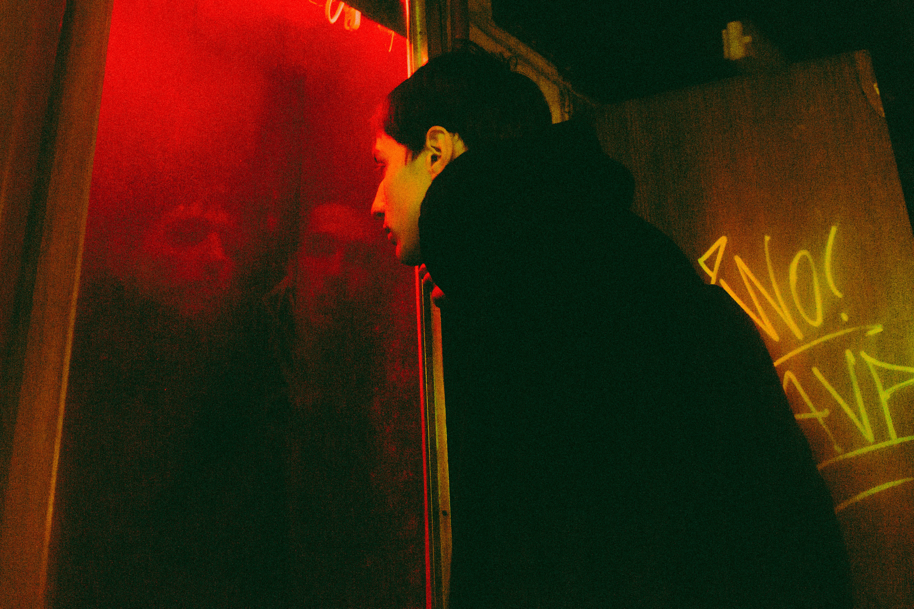
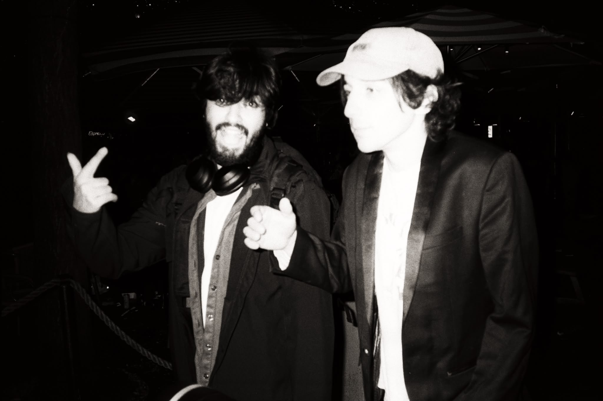

ilija maršićević
i’m a composer and producer currently based between the hague, netherlands & belgrade, serbia
my work mostly revolves around rock & pop production, contemporary music and scoring for film. however i’ve had experience in immersive audio, jingle writing and television music, rap production & performance
i value collaboration & artistic communities most of all. i had the pleasure to cherish such a community being a founding member of prepad fest (2021–2024)
in film & television i’ve been in front and behind the camera, in meetings in pre- and in my room/studio in post-production. notable credits can be found here
production highlights
archie tulk - human noise jymenik - zidovi (song) jowam - rotterdam daze - fever dream demo’s
marija cerović arsenijevićclicking on the photo will take you to the photographer’s instagram

marija cerović arsenijević
mina-héloise calori / sotiris stamatiou